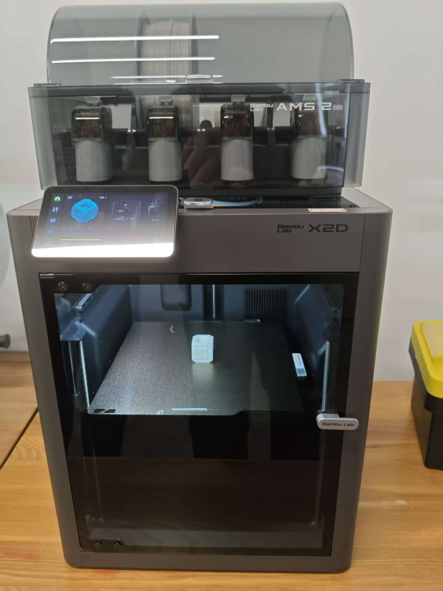
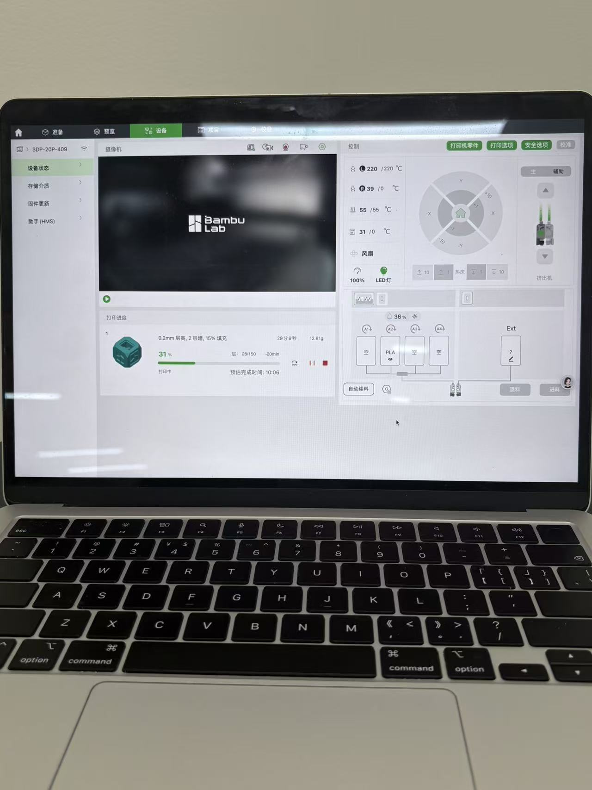
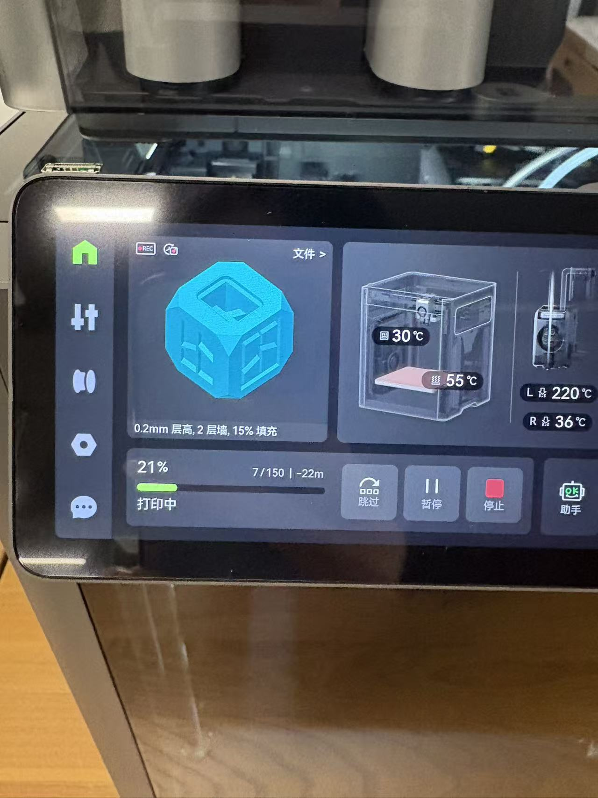
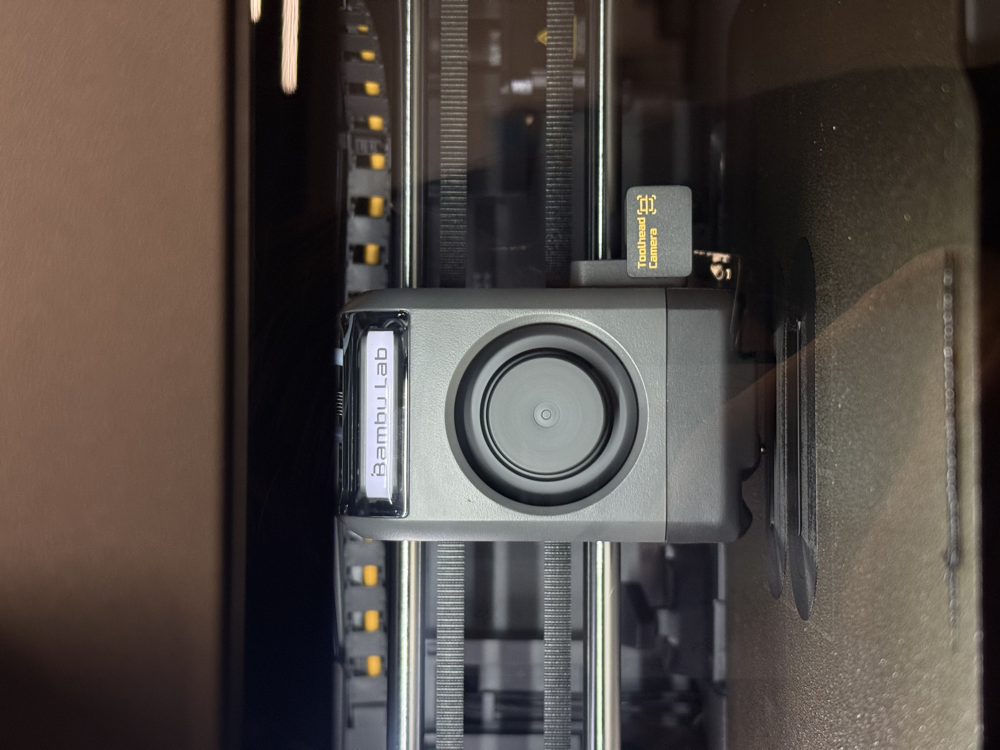

3D 打印技术实践
3D Printing Technology Practice
Bambu Lab 3D 打印操作教程
本章节将详细介绍如何使用 Bambu Lab（拓竹）打印机进行 3D 打印。Bambu Lab 以其高速、多色打印和智能化体验著称，主要流程包括模型准备、切片软件设置以及打印机操作。
一、准备工作
- 硬件检查：确保打印机已通电，耗材（Filament）已正确装入 AMS（自动供料系统）或直接插入后方进料口。
- 平台清洁：使用异丙醇或清水清洁打印平台，确保无油污和灰尘，以保证首层粘附力。
- 网络连接：确保打印机已连接 Wi-Fi，并在手机或电脑上安装 Bambu Handy App 或 Bambu Studio 软件。

3D打印机硬件检查
二、使用 Bambu Studio 进行切片
Bambu Studio 是官方推荐的切片软件，基于 PrusaSlicer 开发，针对拓竹打印机进行了优化。
- 导入模型：打开 Bambu Studio，将 .STL 或 .OBJ 格式的 3D 模型拖入工作区。
- 调整模型：
- 使用移动、旋转和缩放工具调整模型位置和大小。
- 若需多色打印，使用"颜色绘画"功能为模型不同部分指定颜色，并对应 AMS 中的耗材槽位。
- 参数设置：
- 打印机型号：选择对应的型号（如 X1-Carbon, P1P, A1 等）。
- 耗材类型：选择与实物一致的耗材（如 PLA, PETG, ABS），并匹配颜色。
- 打印质量：根据需求选择"快速"、"标准"或"高质量"预设。对于初学者，建议使用"标准"模式。
- 支撑结构：如果模型有悬空部分，勾选"生成支撑"，推荐选择"树状支撑"以节省材料且易于去除。

Bambu Studio 软件界面
- 切片预览：点击右侧的"切片"按钮。完成后，切换到"预览"标签页，逐层检查打印路径，确保没有异常。
- 发送打印：
- 云端打印：登录 Bambu Cloud 账号，点击"打印板"图标，选择打印机并发送任务。
- 本地打印：将 microSD 卡插入电脑，导出 .3mf 或 .gcode 文件到卡中，再将卡插入打印机。
三、打印机端操作
- 接收任务：如果是云端发送，打印机屏幕会弹出打印请求，点击"确认"开始打印。
- 自动调平与振动补偿：X1 系列会自动进行床面调平和振动补偿；P1 和 A1 系列可能会提示进行手动或半自动校准，请按照屏幕指引操作。

打印机操作界面
- 监控打印：
- 通过打印机屏幕或 Bambu Handy App 实时查看摄像头画面。
- 注意观察首层打印效果，确保线条均匀且牢固粘附在平台上。
- 处理异常：如果发生堵头或脱料，打印机会自动暂停并推送通知。根据 App 指引清理喷头或重新装料后继续打印。
四、打印完成与后处理
- 取件：打印完成后，等待热床冷却（如有柔性 PEI 板，可取下板材轻轻弯曲即可脱落模型）。
- 去除支撑：使用钳子或专用工具小心去除支撑结构。
- 清理现场：清理打印平台残留物，为下一次打印做准备。

打印成品展示
五、实战案例展示

3D打印过程记录

打印成品细节
小贴士
- 首次使用新耗材时，建议在 Bambu Studio 中进行"耗材校准"以获得最佳挤出效果。
- 保持打印环境通风良好，特别是在打印 ABS 或 ASA 等材料时。
- 定期备份 microSD 卡中的数据，并格式化卡片以保持文件系统健康。